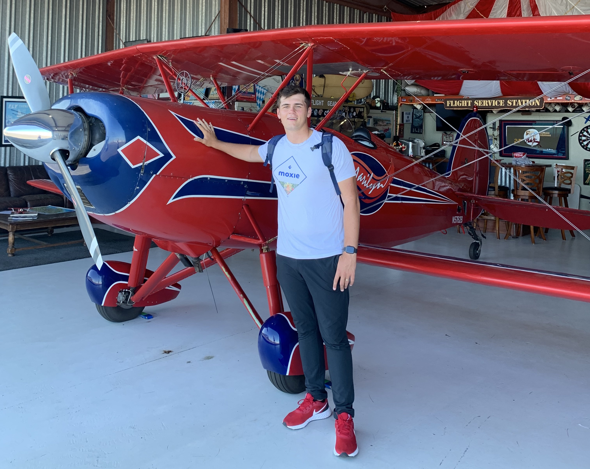

Hey, I am Daymon Hansen
Data Enthusiast

Data Enthusiast
My expertise extends to data analysis and visualization, with a strong foundation in statistical analysis and data manipulation. I have a knack for transforming raw data into meaningful insights through exploratory data analysis and effective data visualization techniques. I'm proficient in Python, SQL, Power BI, Tableau, and I leverage libraries like Pandas, Matplotlib, and Seaborn to create informative data visualizations that drive decision-making.
Through school and personal projects, I've honed my ETL expertise using Selenium and Requests for efficient data extraction from web sources and APIs. I leverage Pandas and SQL/SISS adeptly to clean and transform data, ensuring accuracy and usability. I excel in crafting and maintaining database schemas using best practices, with SSMS facilitating seamless data loading into SQLServer. Moreover, I proficiently manage local .csv files for remote access while containerizing data pipelines using Docker for scalability and consistent deployment.
I specialize in machine learning and artificial intelligence. I've developed predictive models for various applications, including recommendation systems and sentiment analysis. I have hands-on experience with deep learning frameworks like TensorFlow and SkiKit-Learn, and I've successfully implemented neural networks for image classification tasks. My passion lies in harnessing the power of machine learning to solve real-world problems.
I thrive on creating data-driven solutions to complex problems. Whether it's building robust fraud detection algorithms or constructing data pipelines for real-time data processing, I'm adept at designing scalable and efficient solutions. I understand the importance of collaboration and communication, ensuring that my data-driven insights are accessible and actionable for stakeholders. My commitment to continuous learning keeps me at the forefront of emerging trends in data science and technology.
Utah Based Developer
Originally planning to do aerospace engineering I took one class of CS my freshman year, fell in love and switched majors the very next semester. I constantly find my self researching/learning new skills and tools outside of school/work. What fascinates me about the field of data science is the shear number of applications and limitless ways to make a change in the world.
To pay for my schooling and provide for my wife and I, I have a number of years doing door to door sales. I hope to be able to use my skills learned there in my career in data. There are many aspects that carry over such as being a great communicator and being able to deal with people very well. This includes collaboraing with team members in an effective manor as well and handling conflict and managing a team.
Some of my favorite hobbies include playing basketball, mountain biking and snowboarding.

Recent Data Projects
Related Data Analysis and Visualizations
Click to download my resume.
Download Resume (PDF)